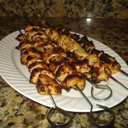

Rosemary Ranch Chicken Kabob

Description
This rosemary ranch chicken recipe is so delicious, tender,
and juicy the chicken will melt in your mouth. Even the most
picky eater will be begging for the last piece.
Ingredients
- 1/2 cup olive oil
- 1/2 cup ranch dressing
- 3 tablespoons Worcestershire sauce
- 1 tablespoon minced fresh rosemary
- 2 teaspoons salt
- 1 teaspoon lemon juice
- 1 teaspoon white vinegar
- 1/4 teaspoon ground black pepper, or to taste
- 1 tablespoon white sugar,or to taste (Optional)
- 5 skinless,boneless chicken breast halves - cut into 1 inch cubes
Steps
- In a medium bowl, stir together the olive oil, ranch dressing,
Worcestershire sauce, rosemary, salt, lemon juice, white vinegar,
pepper and sugar. Let stand for 5 minutes. Place chicken in the bowl,
and stir to coat with the marinade. Cover and refrigerate for 30 minutes.
- Preheat the grill for medium-high heat. Thread chicken onto skewers and
discard marinade.
- Lightly oil the grill grate. Grill skewers for 8 to 12 minutes, or until
the chicken is no longer pink in the center, and the juices run clear.
- Enjoy!